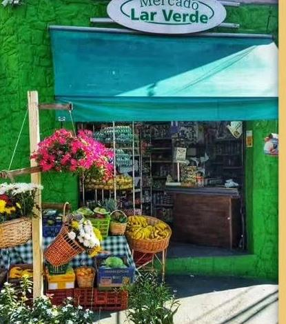
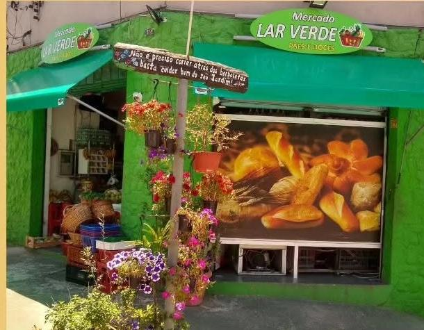

01 / 07
Comunicação visual é o que torna sua marca inconfundível.

E ela pode:


Vamos transformar o seu espaço? Chame a Total Impacto no direct!
Faça com que ela diga as coisas certas.
Empresa
amadora
Empresa
confiável
Vamos transformar sua empresa?
Chame a Total Impacto no direct!